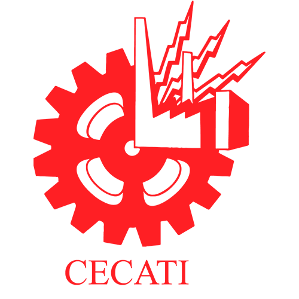
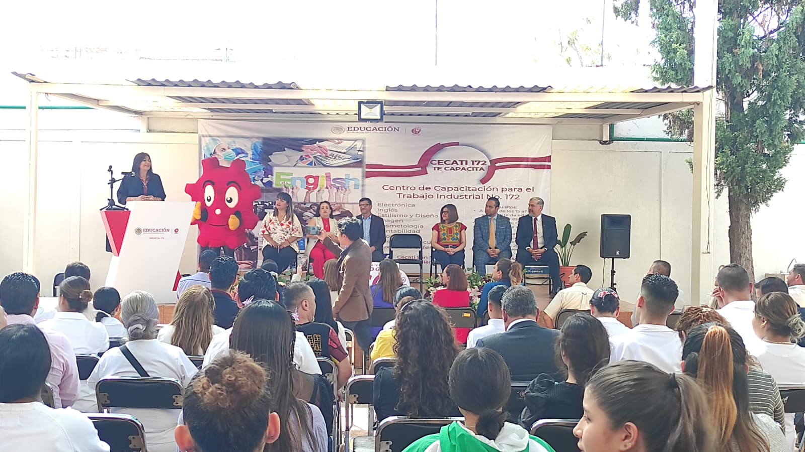

ANIVERSARIO 60
Con motivo del 60 Aniversario de los CECATI en México tuvimos el honor de recibir la visita de la maestra Nora Ruvalcaba, la Subsecretaria de Educación Media Superior
 dió un mensaje contundente de apoyo en todos los talleres de nuestro plantel y donde día a día los docentes imparten capacitación
pertinente para el trabajo y así contribuir a la Grandeza de México.
En el acto fué develada la placa conmemorativa que deja un testimonio viviente de los 60 años transformando Vidas.
Se contó con la presencia del Dr. Mario Hernández González Director General de la DGCFT quien en su mensaje institucional
reafirmó las líneas colaboración encaminadas a reafirmar las sinergias de trabajo en equipo con los subsistemas de EMS.

Creado por Dariana Valentina Reyes, estudiante del CECATI 172 en el curso de "Programación HTML"